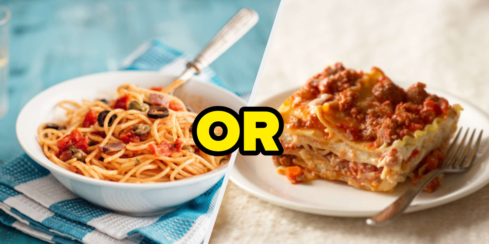
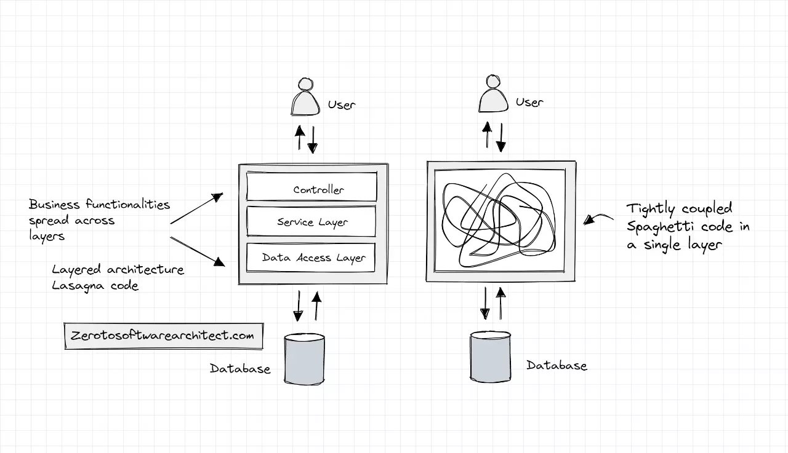
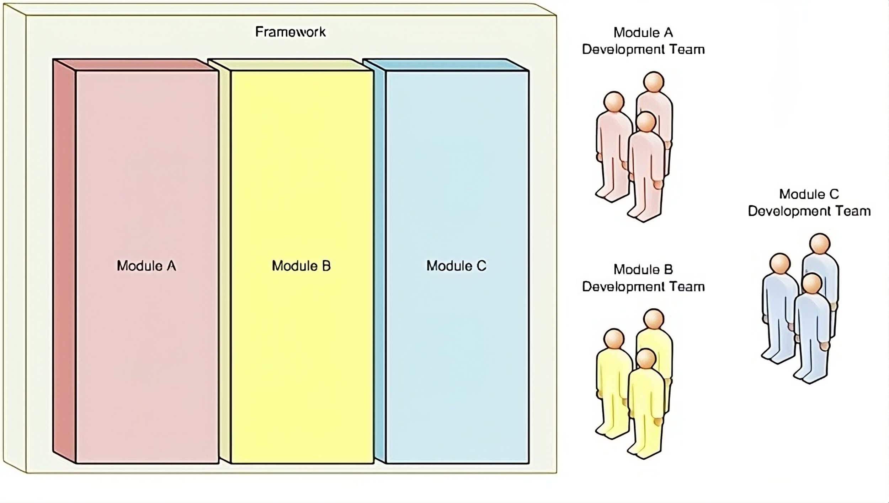
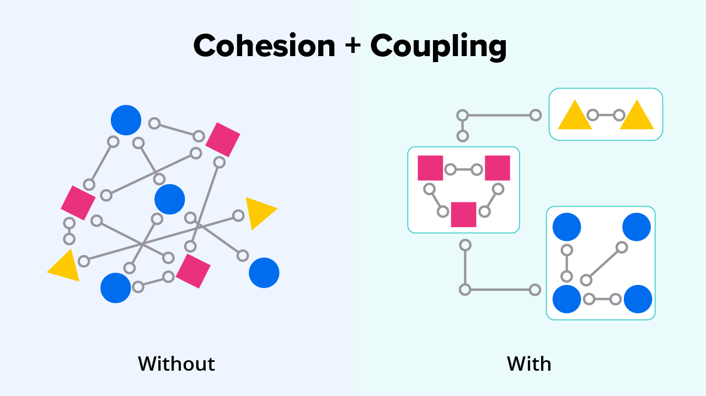
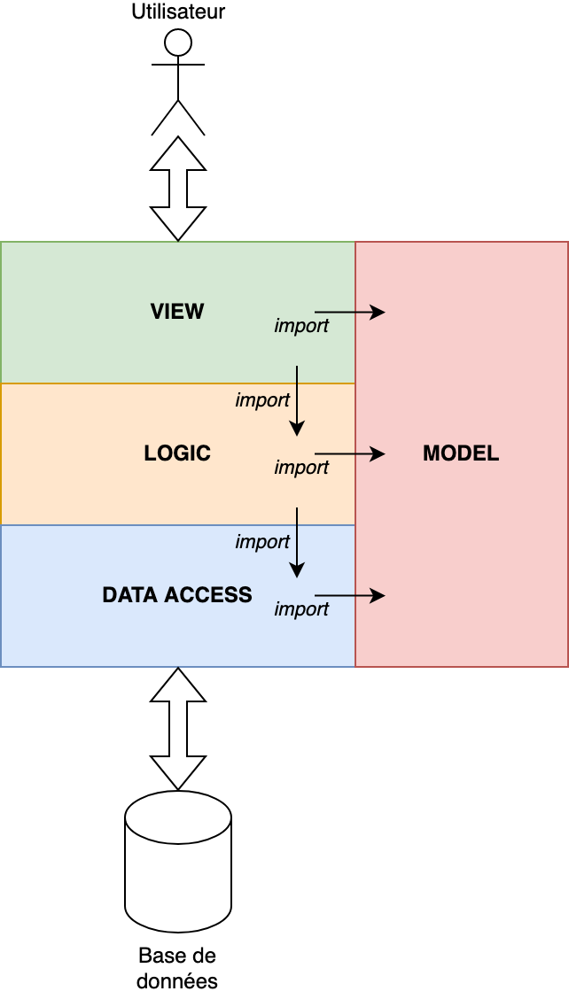
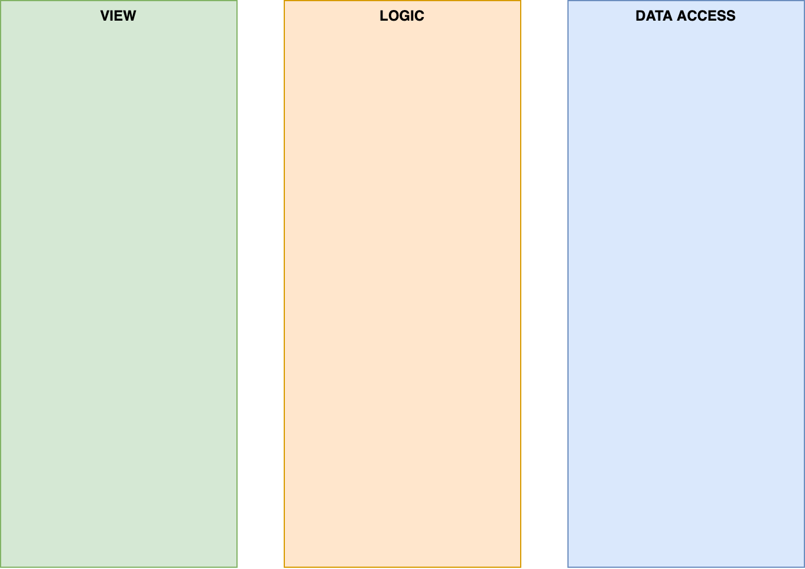

class: center, middle # Programmation orientée objet : # architecture d'application <img height="200px" src="img/php_logo.png"> --- ## Problématique Quel est le plat préféré des développeurs ? <div style="text-align: center;">  </div> --- ## Problématique <div style="text-align: center;">  </div> --- ## Concept de "Separation of concerns (SoC)" <br> <div style="text-align: center;">  </div> --- ## Concept de "Separation of concerns (SoC)" <br> <div style="text-align: center;">  </div> --- ## Structure du projet <div style="text-align: center;">  </div> --- ## Appels successifs <div style="text-align: center;">  </div> --- ## Transformation des exceptions <div style="text-align: center;"> </div> --- ## Un exemple concret ### Création du modèle ```php class Eleve { private $id; private $nom; private $dateDeNaissance; function __construct($id, $nom, $dateDeNaissance) { $this->id = $id; $this->nom = $nom; $this->dateDeNaissance = $dateDeNaissance; } // + getters / setters } ``` --- ## Un exemple concret ### Couche "Accès aux données" ```php class EleveDataAccess { private $connexion; public function __construct() { $bdd = BDConnexion::getInstance(); $this->connexion = $bdd->getConnection(); } } ```